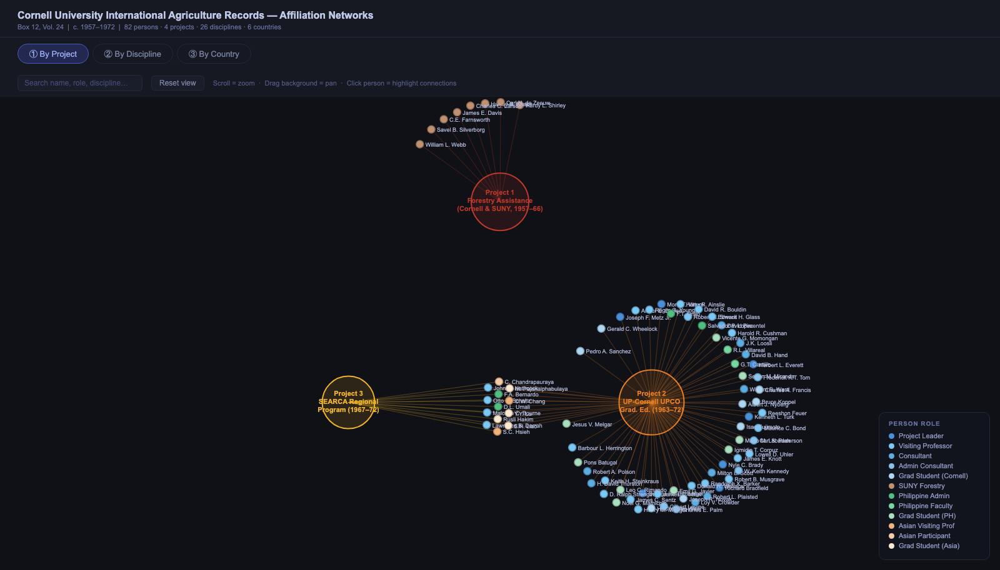
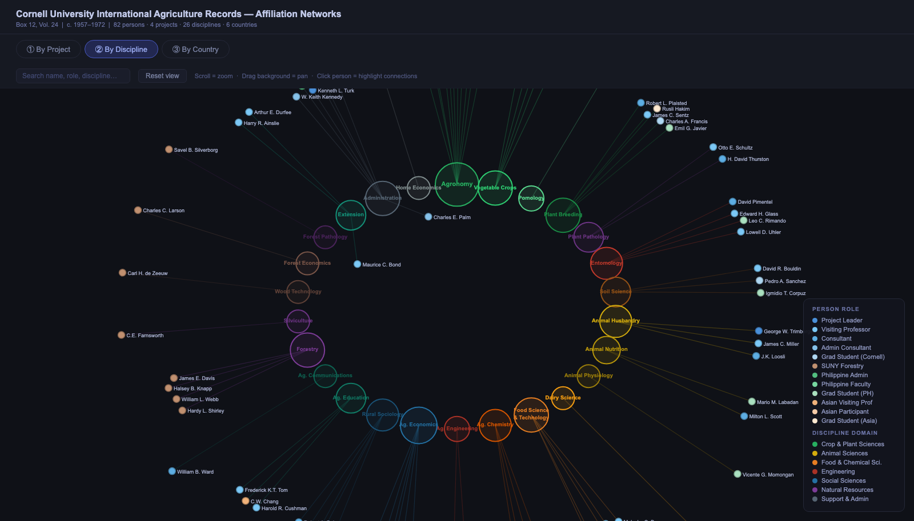
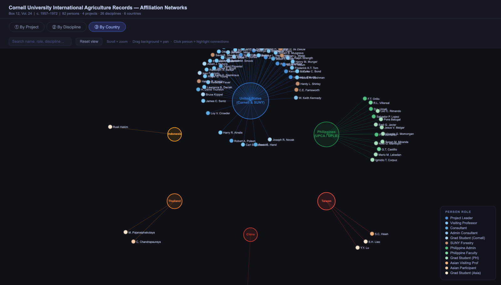

Summary
Box 12 / Volume 24 of the Cornell University International Agriculture Records documents three linked agricultural development programs in the Philippines and Southeast Asia between 1957 and 1972. The records cover final reports, annual reviews, consultant trip reports, graduate student papers, planning documents, budgets, appendices, and correspondence.
The programs centered on Cornell University's role in building agricultural education, research capacity, graduate training, and regional cooperation around the University of the Philippines at Los Banos. Across the archive, 82 named participants appear from 5 states and 26 academic disciplines.
| Field | Detail |
|---|---|
| Collection | Cornell University International Agriculture Records |
| Archive unit | Box 12, Volume 24 |
| Call number | 21-2-1700 |
| Date range | c. 1957-1972 |
| Holding institution | Cornell University Library Annex |
| Physical item | 3,254-page digitised PDF |
| Main location | Los Banos, Laguna, Philippines |
| Named participants | 82 |
| States represented | 5 |
| Disciplines represented | 26 |
Programs
| Code | Program | Dates | Contractor | Funder | Partner |
|---|---|---|---|---|---|
| P1 | Forestry Assistance Program | 1957-1966 | Cornell University, then SUNY College of Forestry at Syracuse | USAID / ICA | University of the Philippines College of Forestry |
| P2 | UP-Cornell Graduate Education Program / UPCO | 1963-1972 | Cornell University | Ford Foundation, with additional USAID, Rockefeller Foundation, and World Bank support | University of the Philippines College of Agriculture |
| P3 | SEARCA Regional Program | 1967-1972 | Cornell University | Ford Foundation | UPLB / SEARCA |
Project 1: Forestry Assistance Program
The Forestry Assistance Program began in 1957, the same year the University of the Philippines College of Forestry was formally separated from the Philippine Bureau of Forestry. The program addressed postwar rebuilding, faculty training, curriculum development, research capacity, facilities, and administration.
By June 1966, the College had 49 faculty members. Thirty-two had been sent abroad for further education or training, and 22 current faculty members had earned advanced degrees.
| Name | Role | Discipline | State | Period |
|---|---|---|---|---|
| Hardy L. Shirley | SUNY Forestry Staff | Forestry | USA | P1, 1957-1966 |
| James E. Davis | SUNY Forestry Staff | Forestry | USA | P1, 1957-1966 |
| William L. Webb | SUNY Forestry Staff | Forestry | USA | P1, 1957-1966 |
| C.E. Farnsworth | SUNY Forestry Staff | Silviculture | USA | P1, 1957-1966 |
| Halsey B. Knapp | SUNY Forestry Staff | Forestry | USA | P1, 1957-1966 |
| Carl H. de Zeeuw | SUNY Forestry Staff | Wood Technology | USA | P1, 1957-1966 |
| Charles C. Larson | SUNY Forestry Staff | Forest Economics | USA | P1, 1957-1966 |
| Savel B. Silverborg | SUNY Forestry Staff | Forest Pathology | USA | P1, 1957-1966 |
Project 2: UP-Cornell Graduate Education Program / UPCO
UPCO was the largest and most sustained program in the archive. It aimed to transform the University of the Philippines College of Agriculture from a teaching college into a research-intensive graduate institution with regional reach.
UPCO supported graduate fellowships, visiting professors, short-term consultants, research programs, curriculum modernization, laboratory construction, library development, computing infrastructure, and the Association of Colleges of Agriculture in the Philippines.
| Name | Role | Discipline | State | Period |
|---|---|---|---|---|
| Nyle C. Brady | Project Leader | Agronomy | USA | Sep 1963-Nov 1963 |
| Richard Bradfield | Project Leader | Agronomy | USA | Jan 1964-Jul 1964 |
| Herbert L. Everett | Project Leader | Agronomy | USA | Jul 1964-Jan 1966 |
| George W. Trimberger | Project Leader | Animal Husbandry | USA | Jan 1966-Nov 1967 |
| Joseph F. Metz Jr. | Project Leader | Agronomy | USA | Sep 1967-Jul 1969 |
| Kenneth L. Turk | Project Leader | Administration | USA | Acting / overlap |
| Morrill T. Vittum | Project Leader | Vegetable Crops | USA | Jun 1969-Jun 1972 |
Project 3: SEARCA Regional Program
SEARCA, the Southeast Asian Regional Center for Graduate Study and Research in Agriculture, emerged from the regional ambitions of UPCO. P3 overlapped with the later years of P2 and formalized Los Banos as a regional agricultural education and research hub.
The P3 affiliation group includes 13 people: Cornell visiting professors who bridged from P2, Philippine administrators, Asian visiting professors, Asian participants, and Asian graduate students.
| Affiliation status | Persons | Interpretation |
|---|---|---|
| P1 | 8 | People identified only with the forestry assistance program. |
| P2 | 56 | People identified only with the UP-Cornell graduate education program. |
| P3 | 0 | No people appear in P3 without also appearing in P2. |
| P2 and P3 | 13 | All P3-affiliated people in the register also appear as P2 participants. |
| Name | Role | Discipline | State | Period |
|---|---|---|---|---|
| Malcolm C. Bourne | Visiting Professor | Food Science & Technology | USA | P2-P3 overlap |
| Otto E. Schultz | Visiting Professor | Plant Pathology | USA | P2-P3 overlap |
| John N. Hathcock | Visiting Professor | Agricultural Chemistry | USA | P2-P3 overlap |
| Lawrence B. Darrah | Visiting Professor | Agricultural Economics | USA | P2-P3 overlap |
| D.L. Umali | Philippine Administrator | Administration | Philippines | P2-P3 overlap |
| F.A. Bernardo | Philippine Administrator | Administration | Philippines | P2-P3 overlap |
| S.C. Hsieh | Asian Visiting Professor | Agricultural Economics | Taiwan | P2-P3 overlap |
| C.W. Chang | Asian Visiting Professor | Agricultural Education | Taiwan | P2-P3 overlap |
| C. Chandrapauraya | Asian Participant | Food Science & Technology | Thailand | P2-P3 overlap |
| Rusli Hakim | Asian Graduate Student | Plant Breeding | Indonesia | P2-P3 overlap |
| Y.Y. Lu | Asian Graduate Student | Agricultural Economics | Taiwan | P2-P3 overlap |
| S.H. Liao | Asian Graduate Student | Agricultural Economics | Taiwan | P2-P3 overlap |
| M. Pajanaiphabulaya | Asian Graduate Student | Home Economics | Thailand | P2-P3 overlap |
Network Centrality Analysis
Which people connect projects? Which affiliations reach the most participants? Explore centrality rankings alongside the existing project, discipline, and state networks.
| Measure | What it reveals |
|---|---|
| Degree | Direct connections: a person’s affiliations or a group’s participating people. |
| Betweenness | Structural bridges that lie on shortest paths through the affiliation network. |
| Harmonic centrality | Reach through short paths, accounting for disconnected parts of the network. |
Each interactive panel below now includes separate rankings for people and affiliation groups, selectable measures, node inspection, and a CSV download of all scores. Search filters the display without changing the network used for analysis.
These are measures of recorded affiliation structure, not proof of historical influence or direct collaboration. People in the discipline and state views each have one affiliation, so their betweenness is zero. Full formulas and interpretation notes are available inside the explorer.
Affiliation Networks
Three bipartite affiliation networks were constructed from the personnel register. Each links people to one type of hub: project, discipline, or state. Search for names, select centrality rankings to highlight connections, and zoom or pan each graph.
Live Interactive Networks
Network by Project
Network by Discipline
Network by State
Network summary tables
Network by Project
| Project membership | Persons | Share |
|---|---|---|
| P1 only | 8 | 10% |
| P2 only | 56 | 68% |
| P3 only | 0 | 0% |
| P2 and P3 | 13 | 16% |
| Total unique persons | 82 | 100% |
Network by Discipline
| Discipline | Persons |
|---|---|
| Agronomy | 11 |
| Agricultural Economics | 7 |
| Administration | 7 |
| Plant Breeding | 6 |
| Food Science & Technology | 5 |
| Agricultural Chemistry | 5 |
| Vegetable Crops | 5 |
| Entomology | 4 |
| Animal Husbandry | 4 |
| Rural Sociology | 4 |
| Forestry | 4 |
Network by State
| State | P1 | P2 | P3 | Unique persons |
|---|---|---|---|---|
| USA | 8 | 52 | 4 | 53 |
| Philippines | 0 | 15 | 2 | 15 |
| Taiwan / ROC | 0 | 4 | 4 | 4 |
| Thailand | 0 | 2 | 2 | 2 |
| Indonesia | 0 | 1 | 1 | 1 |
| Total | 8 | 74 | 13 | 82 |
Column totals exceed 82 because 13 persons appear in both P2 and P3.
Backup network snapshots



Full Personnel Register
The register lists the named people identified in the archive, with role, discipline, state, and project affiliation. Use the search box to filter by name, role, discipline, state, or project.
Showing all personnel.
| Name | Role | Discipline | State | Project(s) |
|---|
The archive summary reports 82 named participants. The current extracted register renders 83 rows, so this site preserves the full extracted register while keeping the reported archival total visible in the summary statistics.
Cross-Project Participants
The following people appear in both P2 and P3:
| Name | Discipline | State |
|---|---|---|
| Malcolm C. Bourne | Food Science & Technology | USA |
| Otto E. Schultz | Plant Pathology | USA |
| John N. Hathcock | Agricultural Chemistry | USA |
| Lawrence B. Darrah | Agricultural Economics | USA |
| D.L. Umali | Administration | Philippines |
| F.A. Bernardo | Administration | Philippines |
| S.C. Hsieh | Agricultural Economics | Taiwan |
| C.W. Chang | Agricultural Education | Taiwan |
| C. Chandrapauraya | Food Science & Technology | Thailand |
| Rusli Hakim | Plant Breeding | Indonesia |
| Y.Y. Lu | Agricultural Economics | Taiwan |
| S.H. Liao | Agricultural Economics | Taiwan |
| M. Pajanaiphabulaya | Home Economics | Thailand |
Thematic Topics
| Theme | Archive content |
|---|---|
| Graduate education and training | Fellowships, degrees, thesis supervision, graduate assistantships, completion records. |
| Curriculum development | Syllabi, course modernization, laboratory teaching, adaptation of US agricultural science curricula to Philippine tropical conditions. |
| Faculty development | Overseas training, recruitment, salaries, promotion, and retention of trained staff. |
| Physical facilities | Buildings, laboratories, equipment procurement, faculty housing, World Bank reporting. |
| Research programs | Crop science, animal science, food technology, soil science, agricultural economics, rural sociology, and related fields. |
| Extension and outreach | Farmer contact, vocational agriculture education, extension worker training, ACAP networks. |
| Institutional administration | Program management, budgets, counterpart funds, Ford Foundation reporting, inter-institutional coordination. |
| Regional cooperation | Asian participation, SEARCA formation, regional conferences, IRRI links, JCRR participation. |
Key Institutions
| Institution | State / scope | Role |
|---|---|---|
| Cornell University, New York State College of Agriculture | USA | Primary contractor for P2; initial contractor for P1. |
| SUNY College of Forestry at Syracuse | USA | Contractor for P1 from 1960 to 1966. |
| University of the Philippines College of Agriculture | Philippines | Main partner for P2 and P3. |
| University of the Philippines College of Forestry | Philippines | Main partner for P1. |
| Ford Foundation | International | Primary funder for P2 and P3. |
| USAID / AID / ICA | USA | Primary funder for P1 and co-funder for P2. |
| World Bank | International | Infrastructure funding for UPLB buildings. |
| Rockefeller Foundation | International | Fellowship and co-funding support for P2. |
| Sino-American Joint Commission on Rural Reconstruction | Taiwan / USA | Supported Asian participant routes into P2 and P3. |
| SEARCA | Southeast Asia | Regional center institutionalized through P3. |
| ACAP | Philippines | National network of agriculture colleges supported by UPCO. |
| IRRI | Philippines / international | Co-located Los Banos research institution and informal collaborator. |
Files
| File | Description |
|---|---|
| Cornell_International_Agriculture_Wiki.md | Markdown version of the wiki page. |
| Cornell_International_Agriculture_Wiki.html | Earlier single-page HTML wiki. |
| Cornell (1).txt | Full OCR text used as the base for document keyword search. |
| Cornell_Archive_Research_Summary.md | Full research summary with detailed tables and Mermaid diagrams. |
| Cornell_Affiliation_Networks.html | Interactive D3 network visualization. |
| figures/cornell_network_project.png | Project network snapshot. |
| figures/cornell_network_discipline.png | Discipline network snapshot. |
| figures/cornell_network_country.png | State network snapshot. |


Notes
The archive documents three contractually or institutionally distinct programs, although P2 and P3 overlap operationally. P3 is treated as a separate affiliation category because it had a distinct regional mandate and a partially distinct participant profile.